Computational geometry · C++ · standard library only
Meshes from first principles.
Triangulation is easy on clean input and fragile on real input: collinear points, duplicates and near-touching edges are where meshes crack. This engine triangulates polygons and builds Delaunay meshes and Voronoi regions with no geometry library to lean on, deciding those edge cases explicitly and pinning them down with 1,027 test assertions.
300 sites, triangulated and dualized end to end: 581 triangles and 880 edges, exact to Euler’s formula.
Why it exists
The nominal algorithms are easy. The boundary cases are not.
Meshes and Voronoi regions underpin games, maps and simulations, and they fail in subtle ways when rounding misjudges which side of a line a point lies on. The predicates here handle collinear inputs, duplicate points and orientation with epsilon checks scaled to the size of the problem, so a near-touch resolves without a crossing or a degenerate mesh.
Scale-aware predicates.Every orientation and in-circle test weighs its determinant against an epsilon sized to the input, not a constant.
Verdicts with evidence.With tracing on, each decision prints the determinant, the epsilon and the call, so a wrong mesh can be traced to the test that allowed it.
Euler-exact.Triangle and edge counts are checked against Euler’s formula on every run; the validation pass re-proves every circumcircle empty.
Who wrote what.I hand-wrote the primitives, polygon operations and original ear clipper; I directed and reviewed coding agents on the current Delaunay/Voronoi layers, harness, viewers and benchmarks.
Triangulation
One polygon, and the near-touch inside it.
A random 15-vertex polygon from the engine’s generator, cut into 13 triangles by the ear clipper: n − 2, as a simple polygon must give. Two of its edges pass about 0.06 units apart without crossing, and the triangulation leaves no gap and no overlap there.
The polygon, with the near-touch boxed in red.Thirteen triangles from the ear clipper.
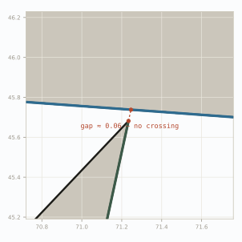
The near-touch, magnified.
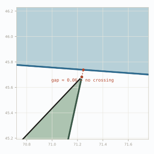
The same spot after triangulation.
Predicates, caught deciding
Every verdict prints its evidence.
Collinear input is rejected with the decision logged: orient2d equals zero against the scaled epsilon, three times, then a refusal instead of a degenerate mesh. On near-degenerate points the in-circle tests print centre, radius², margin and epsilon before calling INSIDE or outside; margins swing from millions down to about 50, which is where the epsilon scaling earns its keep.
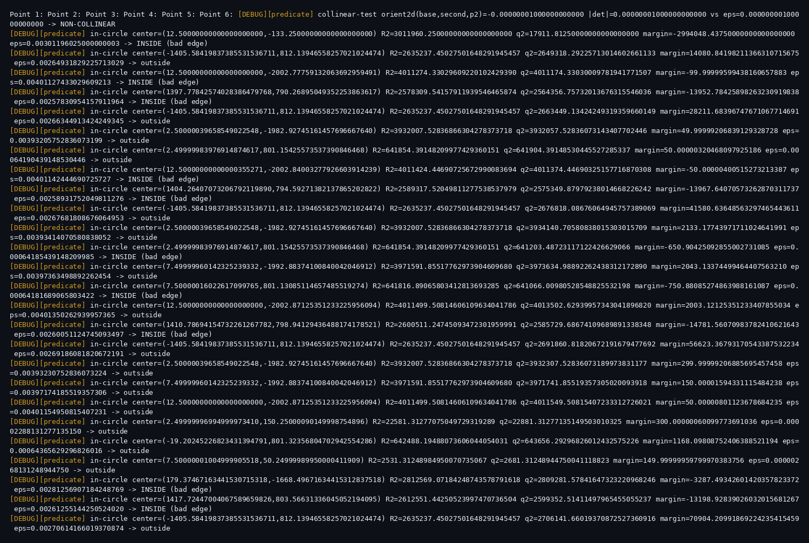
In-circle tests on near-degenerate input, |det| = 1e-8 against eps = 1e-9.
Delaunay & Voronoi
Sites to mesh to dual, at a legible scale.
Seventy sites, seed 7. Every Voronoi vertex is the circumcentre of a Delaunay triangle, often outside its own triangle, since only acute triangles contain their circumcentres.
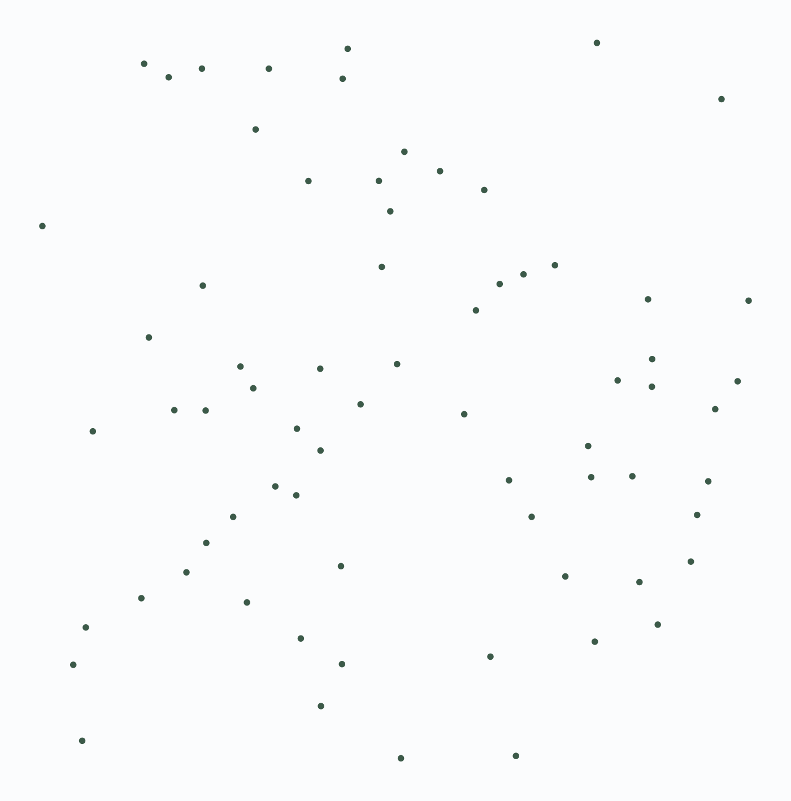
70 sites
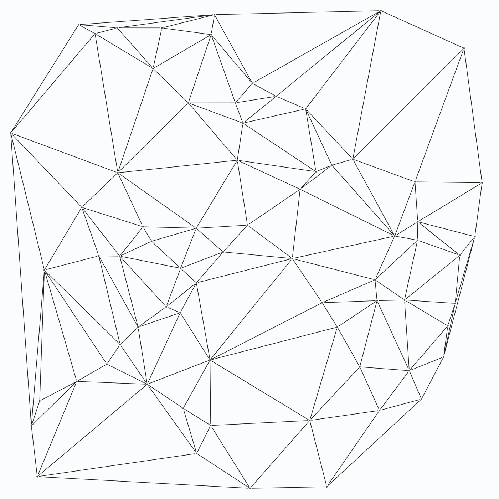
Delaunay · 125 triangles, 194 edges
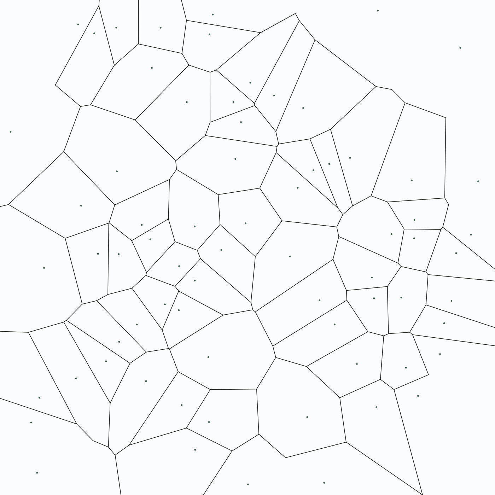
Voronoi dual
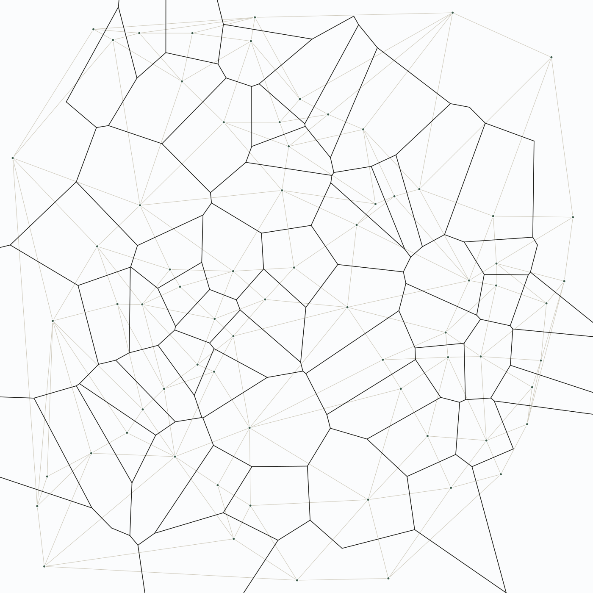
Both overlaid
Measured performance
Validation costs more than construction.
At 20,000 sites the Bowyer–Watson triangulation takes 5.6 s and the Voronoi dualization half a millisecond; then re-proving every circumcircle empty takes 10.1 s. The O(N²) check costs twice what it checks, and the engine runs it anyway. The benchmark studio keeps exact generated inputs, raw process output, per-run resource logs, manifests and checksums.
0.055sCompute-only median, one 1,500-site input, 30/30 runs
4,710KiBMedian peak memory
60 / 60Input-shape study: four families, three seeds, five repetitions
15.7s20,000 sites, construction plus full validation
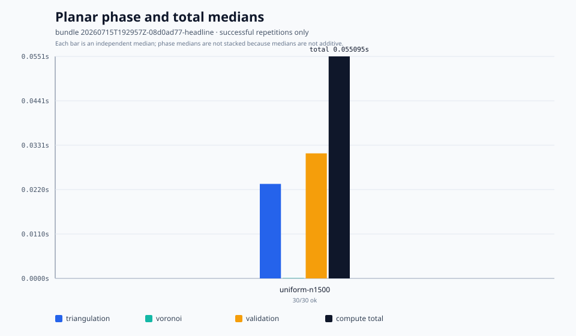
One fixed 1,500-site input, 30 runs: identical input and topology hashes every time. Manifest and raw logs ↗
Four deterministic families at 1,024 sites, three seeds each, five repetitions, 60/60 successful. Seed-level medians, so timing noise isn’t mistaken for input evidence. Full research bundle ↗Where the time goes at 20,000 sites
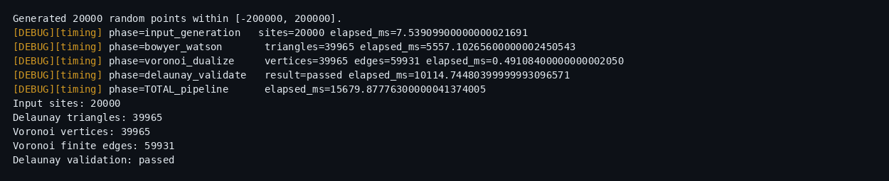
39,965 triangles, validation passed.Collinear input, rejected with the decision logged
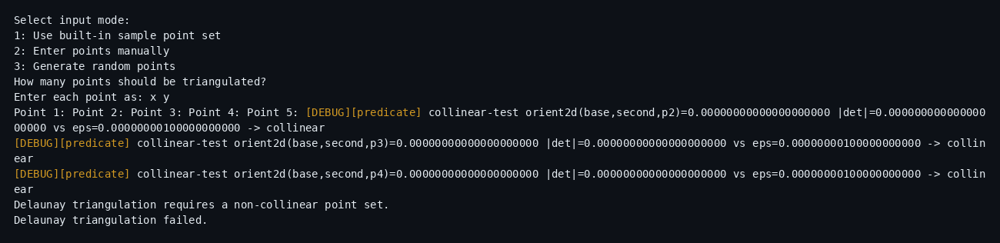
The test harness: 1,027 assertions, 13 suites, all green
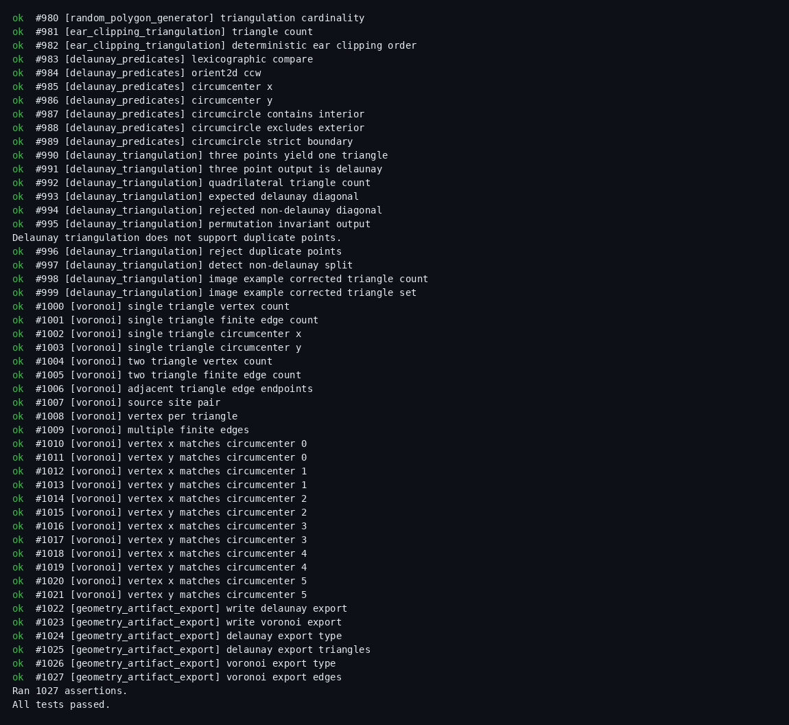
Predicates, both triangulations, the Voronoi dual and the export path, at the pictured commit.Build, algorithms and tests
Full detail in the README: github.com/harrisonwolf/planar-geometry-engine. The compute metric covers triangulation, finite Voronoi construction and topology validation; it excludes input generation, startup and serialization. The engine is also the surface builder behind the terrain studies.